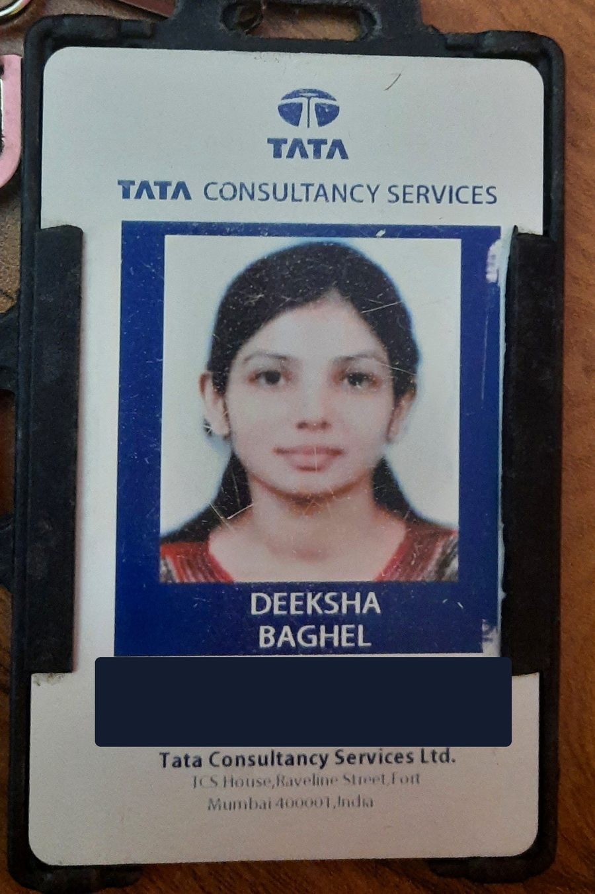
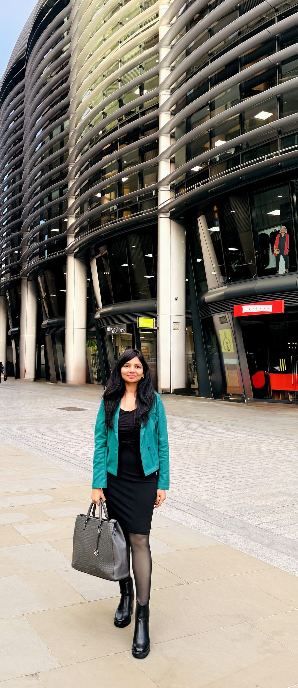

✕
Payment systems already run on automated pipelines — fraud engines veto in real time, authorization models score risk, compliance rules gate every transaction — each optimizing its own objective, none aware of the others. My research asks what changes when these become coordinating agents instead of isolated pipelines: can a multi-agent architecture negotiate fraud risk, authorization, customer experience, compliance and profitability as one joint decision, and still stay auditable enough for a regulator to trust it? The work sits at the intersection of LLM-based agent orchestration, reinforcement learning, and real-time financial decisioning — grounded in eleven years of watching these systems fail to talk to each other in production.
Can autonomous AI agents collaboratively manage payment decisions while balancing fraud risk, authorization, customer outcomes, compliance and profitability? My work explores whether multi-agent systems can coordinate these competing objectives while remaining trustworthy, auditable and robust against emergent failures — bridging LLM-based agent orchestration, reinforcement learning, and real-time financial decisioning. The bet: these five objectives don't have to be traded off in sequence by five separate systems — they can be negotiated jointly, by design.
Eleven years inside payments, mechanical engineering roots, and an independent research thread that now converges on one question: how do you get autonomous agents to make trustworthy financial decisions together, instead of five systems arguing past each other.
Before dashboards, it was thermodynamics and stress analysis. Barkatullah University trained the instinct this research still runs on: decompose a complex system until every part can be tested on its own.

Seven years turning ambiguous stakeholder asks into dimensional models and reporting systems built to survive an audit, not just a demo — the first real lesson in how financial systems actually get judged.

Five years inside the machinery that actually makes these calls — fraud risk, authorization, and decision intelligence workstreams at Global Payments — is where the research question stopped being hypothetical.
Investigating multi-agent systems, reinforcement learning, and uncertainty-aware decision-making for coordinated payments — built and versioned in the open, not left as a private side project.
github.com/Deeksha11-alt/AI-Decision-Intelligence-Research ↗Applying Fall 2027 to take this from independent inquiry to a full-time research program — multi-agent AI systems for payment and financial decision-making.
Open to conversations with faculty and labs working on multi-agent AI, financial decisioning, or trustworthy autonomous systems.